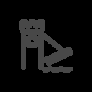
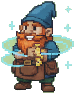
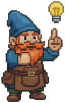
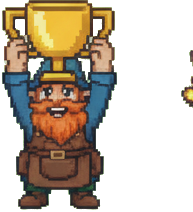
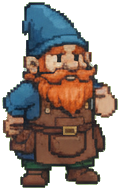
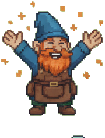
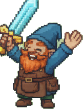

SkillBridge
A pitch for AI-driven career mobility.


DevDivas Presents
AI-Driven Career Mobility for Skills-Based Organizations
Anna Miller
Caroline Randall
Clayton Smith
Sydney March

Problem Understanding
Internal talent is invisible — and it's costing companies millions


Impact and Delivery
What SkillBridge delivers for you

Appendix

Demo
Built by humans. Accelerated by AI.
Implementation and Fit
Built for the enterprise
Vision of the Future · Why This Wins
We built a strong foundation — these are three directions the market is telling us to go.
Gamification Rationale
Progress, not content, is what keeps people coming back

Closing Manifesto
SkillBridge activates internal talent, operationalizes fairness, and makes career growth measurable, visible, continuous.

Built by DevDivas
Anna Miller
Caroline Randall
Clayton Smith
Sydney March
Powered by SpringAis. Narrated by Cedric.
← Return to login